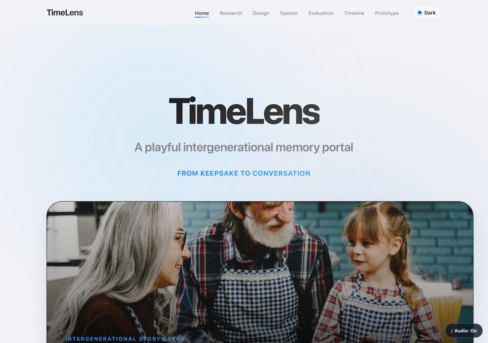
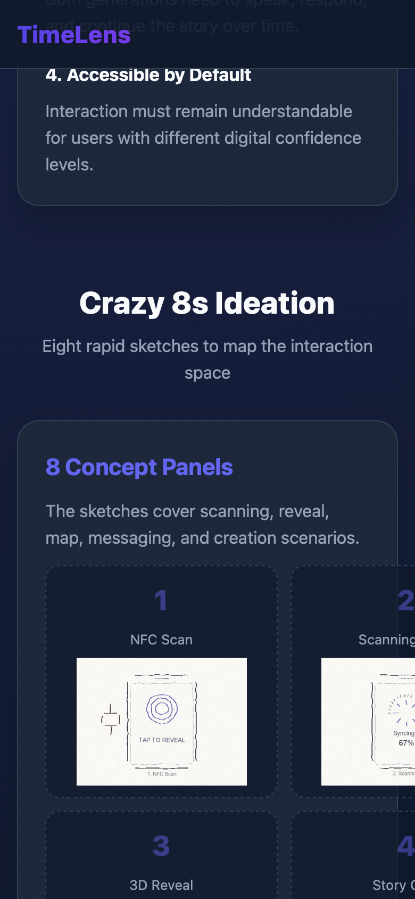
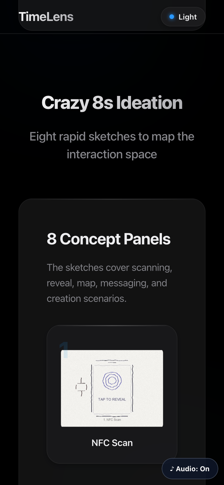
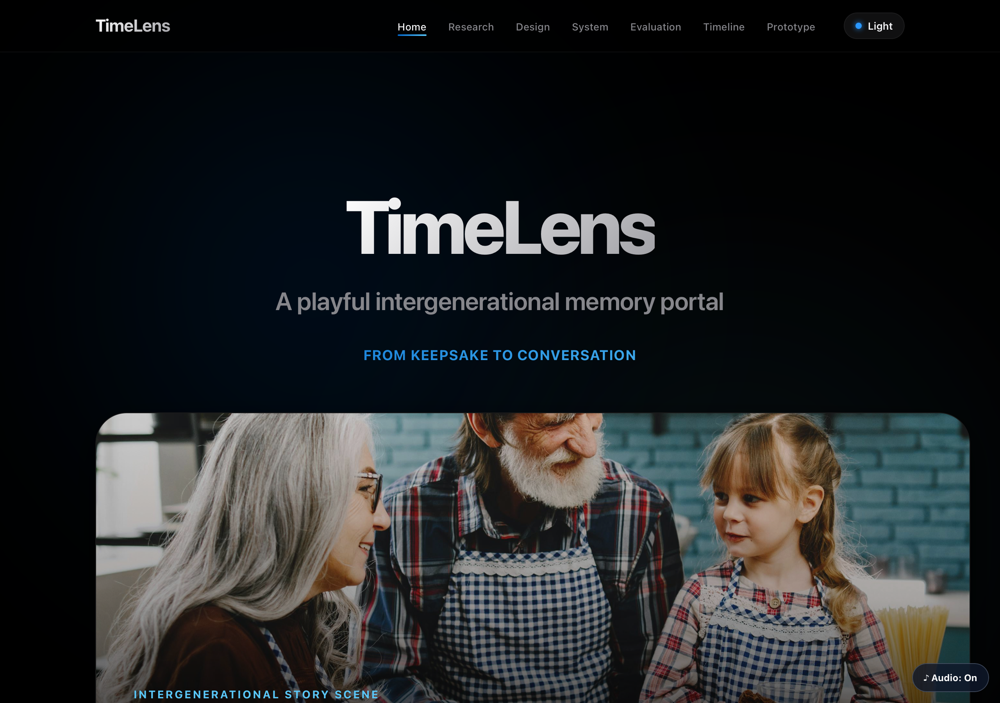

Evaluation & Reflection
Usability testing, iterative refinement, and final reflection on design implications
Usability Testing
Alpha testing with 3 participants from target demographics
Testing Method
We conducted task-based usability testing with the Alpha prototype on three participants representing the primary stakeholder groups: one grandparent (65+), one parent (bridge generation), and one grandchild (18-22). Each participant was asked to complete four core tasks while thinking aloud.
Tasks Tested
- Scan or tap a keepsake to unlock a memory
- View the 3D memory reveal and read the story card
- Send a reply message to continue the story
- Create a new memory entry as a grandparent
Metrics Collected
- Task success rate (binary: completed / abandoned)
- Perceived ease of NFC interaction (1-5 Likert)
- Time to complete each task (seconds)
- Post-task recommendation score (0-10)
- Verbal feedback and pain-point observations
Participant Results
| ID | Role | Age | Task Success | NFC Ease | Time (s) | Recommend | Key Quote |
|---|---|---|---|---|---|---|---|
| P-A1 | Grandparent | 72 | 3/4 | 2 / 5 | 148 | 6 / 10 | "Needed stronger first-step guidance before scan." |
| P-A2 | Grandchild | 19 | 4/4 | 5 / 5 | 52 | 10 / 10 | "The pocket watch reveal felt vivid and fun." |
| P-A3 | Parent | 43 | 4/4 | 4 / 5 | 84 | 8 / 10 | "Role switch is clear for family facilitation." |
Key Findings:
- Grandchildren completed tasks fastest (avg 52s) and rated NFC ease highest (5/5), confirming the playful, intuitive design for digital-native users.
- Grandparents struggled most with the initial scan step (NFC ease 2/5), indicating a need for clearer onboarding and larger tap guidance.
- Parents valued the role-switching feature most, reinforcing that TimeLens succeeds as a communication bridge, not just a storytelling tool.
Iterative Refinement
Before and after changes driven by user feedback and pilot testing
Iteration 1: Apple-style Visual Redesign
Before

The first portfolio draft layered text directly on top of the hero photograph and packed every page with explanatory subtitles. Design crit feedback (Week 8) flagged the layout as visually busy and the colour palette as inconsistent across pages.
Reviewer feedback: "Hero feels noisy — let the photo and the title each have its own moment."
After

Centered the hero typography over a soft gradient, lifted the photograph below the fold, and unified accent colours into a single blue. Standardised card radius, shadow, and spacing tokens across all six portfolio pages.
Commit:
5558b9e — "Redesign portfolio with Apple-style aesthetic, animations, and interaction optimizations"
Iteration 2: Mobile Overflow Handling
Before

The Crazy 8s grid and the alternative-comparison table both forced horizontal page overflow on phones. Pilot testing on a Pixel 6 showed the second sketch panel cropped at the screen edge, breaking the row of eight ideas.
User feedback: "On my phone the cards run off the side — I can’t see ideas 2 and beyond."
After

Wrapped the grid and table in a .scroll-x container so each panel keeps its readable width and the page no longer overflows.
Added a subtle gradient mask on the right edge to signal that more content is available by swiping.
Commit:
ea78b4f — "Improve mobile overflow handling for design page sections"
Iteration 3: Theme Toggle for Light & Dark Mode
Before
The redesigned portfolio shipped with a single fixed theme. Reviewers using the site late at night reported eye strain from the bright background, and one tester preferred dark mode for accessibility reasons.
User feedback: "Looks great in daylight, but I’d turn it down at night if I could."
After

Added a header-level theme toggle that respects prefers-color-scheme on first visit and persists the user’s choice in localStorage.
Both themes were colour-checked against WCAG AA, and the accent blue was tuned to keep contrast above 4.5:1 in both directions.
Commit:
325ff58 — "Add theme toggle, public-facing cleanup, and research stakeholder/paper enhancements"
Final Reflection
Social, ethical, and technical implications of the design
Social & Ethical Implications
TimeLens was designed with intergenerational equity as a core principle. By anchoring interaction in physical keepsakes rather than abstract menus, the system reduces the digital literacy barrier that often excludes older adults from family technology.
- Data privacy: All memory data is stored in LocalStorage only; no server upload or cloud dependency means family stories remain entirely on the user's device.
- Accessibility: Touch targets exceed 44×44dp, color contrast ratios meet WCAG AA, and every NFC path has a manual fallback for unsupported devices.
- Inclusivity risk: Users without smartphones or NFC-capable devices are still partially excluded. Future work could explore printed QR codes on keepsake cards as a lower-tech bridge.
- Emotional safety: Memories can be sensitive. The design avoids public sharing by default and keeps the conversation loop within the family unit.
Technical Reflection — AI Usage
Our team made substantive use of generative AI for code scaffolding, asset generation, and debugging, in compliance with the CPT208 AI policy (PDF p.2). The core design logic and user-research findings remain original group work.
Three representative prompt patterns
-
3D scene scaffold (React Three Fiber).
Prompt — "Generate a React Three Fiber component that renders a low-poly pocket-watch model, supports
OrbitControls, and exposes a prop to play a soft idle rotation." Verification — inspected returned JSX for correct R3F primitives (<Canvas>,useFrame); rannpm run devand confirmed ~60fps on M-series Mac, ~45fps on Android Chrome; replaced AI-suggested external mesh URLs with our own assets inpublic/assets/to avoid licensing risk. -
NFC integration with manual fallback.
Prompt — "Show how to feature-detect Web NFC in Chrome on Android, fall back gracefully when
NDEFReaderis undefined, and surface a manual scan button without breaking iOS Safari." Verification — tested on Pixel 6 (NFC path), iPhone 13 Safari (fallback path), and desktop Chrome (manual button); rejected the AI's first suggestion because it silently swallowed permission errors, and replaced it with an explicit user-facing prompt. -
Portfolio CSS layout.
Prompt — "Convert this responsive grid from
min-width: 768pxto a 3-column grid atmin-width: 1024px, preserving 24px gaps and accessible focus styles." Verification — resized the viewport between 320–1440px and confirmed no horizontal scroll; ran the axe-core accessibility checker on each generated component; verified colour contrast in DevTools to confirm WCAG AA on body text and links.
Verification methodology
- Requirement traceability: every AI-generated component was mapped back to one of the 3 must-haves before being merged.
- Cross-device sanity: Android Chrome, iPhone Safari, and desktop Safari/Chrome covered on each merge.
- Manual diff review: AI output was never committed verbatim — team members read every line and renamed functions / variables in our house style.
- Bias & accessibility audit: colour palettes ran through colour-blind simulators; placeholder copy reviewed for cultural assumptions before merge.
Full session transcripts (request → response → verification notes) are recorded in
/timelens/ai-logs/. See References below for tool citations per university policy.
References
Academic References
[2] Co-constructing Family Memory
[3] Family Memories in the Home: Physical vs Digital Mementos
[4] Visual Mementos: Reflecting Memories with Personal Data
[5] Designing for Slowness, Anticipation and Re-visitation
AI Tool Citations
Per university AI policy (PDF p.2), all generative AI tools used in this project are cited below.
- [6] Claude 3.5 Sonnet, accessed on 2026-03-15 through 2026-04-20, available at https://claude.ai. Used for scaffolding the React Three Fiber 3D memory scene, NFC integration logic, and responsive CSS layout for the portfolio website.
- [7] Gemini Nano Banana Pro, version 1.0, accessed on 2026-03-10, available at https://gemini.google.com. Used for generating conceptual hero images and timeline flowchart visuals in the portfolio.